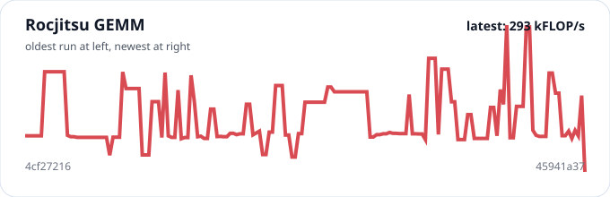
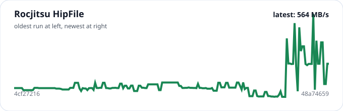
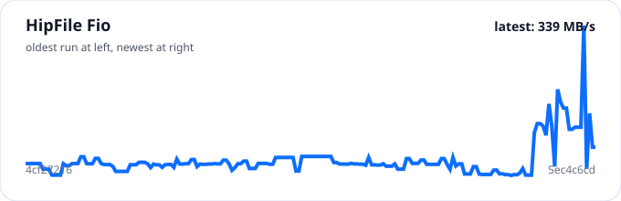
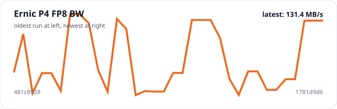
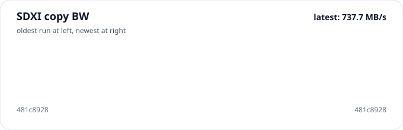
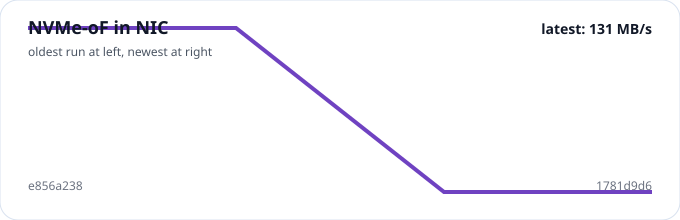
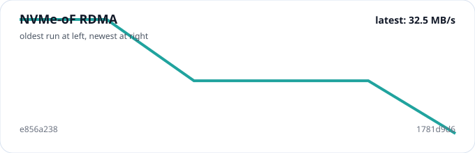
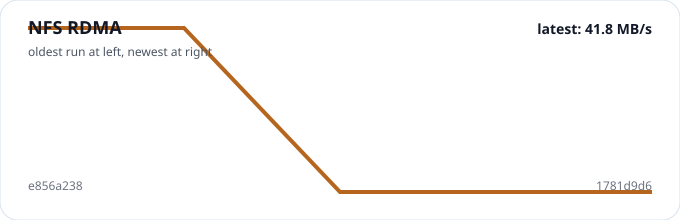
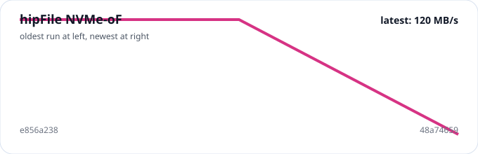
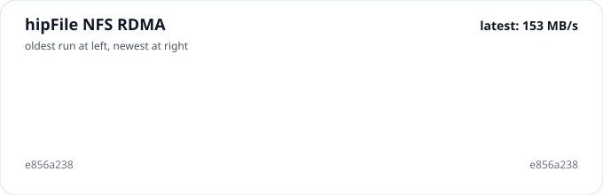

Performance
This page is generated during the Pages publish from retained benchmark history on
gh-pages, using the badge JSON the benchmark jobs upload as inputs. It mirrors
the same basic model used by the ROCm/rocm-ernic site: badges for the latest
published numbers, a durable history file, and a trend page regenerated as new
CI data lands.
Latest published snapshot¶
Generated from 48a74659 at 2026-11-27 19:06 UTC.


Badge colour is health, not branding. Each latest reading is compared against the mean of the previous 5 distinct readings — consecutive republishes of an unchanged number are collapsed first, because a publish re-records every artifact it finds, including ones no job refreshed. Green is at or above 95% of that baseline, amber down to 80%, red below it, and blue means there is not yet a second distinct reading to compare against. The band is wide on purpose: these benchmarks run against an emulated GPU over vfio-user and swing hard between runs.
| Metric | Latest value | Baseline (last 5 distinct) | Verdict |
|---|---|---|---|
| Rocjitsu GEMM | 468 kFLOP/s | 351 kFLOP/s | within tolerance (+33%) |
| Rocjitsu HipFile | 564 MB/s | 558 MB/s | within tolerance (+1%) |
| HipFile Fio | 589 MB/s | 473 MB/s | within tolerance (+25%) |
| Ernic P4 FP8 BW | 131.4 MB/s | 70 MB/s | within tolerance (+88%) |
| SDXI copy BW | 2780.3 MB/s | 1.33 GB/s | within tolerance (+108%) |
| NVMe-oF in NIC | 131 MB/s | 144 MB/s | watch (-9%) |
| NVMe-oF RDMA | 58.1 MB/s | 87.8 MB/s | regressed (-34%) |
| NFS RDMA | 41.8 MB/s | 49 MB/s | watch (-15%) |
| hipFile NVMe-oF | 120 MB/s | 194 MB/s | regressed (-38%) |
| hipFile NFS RDMA | 105 MB/s | 153 MB/s | regressed (-31%) |
Trend charts¶
Rocjitsu GEMM¶

Rocjitsu HipFile¶

HipFile Fio¶

Ernic P4 FP8 BW¶

SDXI copy BW¶

NVMe-oF in NIC¶

NVMe-oF RDMA¶

NFS RDMA¶

hipFile NVMe-oF¶

hipFile NFS RDMA¶

Changes to what is measured¶
A step in a chart on or after one of these dates, at the first daily run after the change reached main, is the change named here.
| Date | Metrics | Change |
|---|---|---|
| 2026-11-18 | HipFile Fio | fio is built from the 3.43 release, the first with the libhipfile engine, where it was a master commit between 3.42 and 3.43. It is still built in the guest before the run: no published golden image carries it yet. One baked after this change has it under /opt/fio-hipfile, and the build is then skipped. |
| 2026-11-18 | Rocjitsu HipFile, HipFile Fio | The stack's NVMe is pointed at the guest's GPU BAR (<vm-nvme-vram>), so hipFile's direct path maps GPU memory, where it most likely went through QEMU's 4 KiB bounce buffer before (inferred, not profiled). Measured by hand before the change: 11 to 13 MB/s without; 831 and 959 MB/s with, one run each. |
| 2026-11-18 | all | Every stack and workflow moved from stock QEMU to the fork QEMU and the ernic server built against its libvfio-user. |
Recent runs¶
| Commit | Generated | Rocjitsu GEMM | Rocjitsu HipFile | HipFile Fio | Ernic P4 FP8 BW | SDXI copy BW | NVMe-oF in NIC | NVMe-oF RDMA | NFS RDMA | hipFile NVMe-oF | hipFile NFS RDMA |
|---|---|---|---|---|---|---|---|---|---|---|---|
| b7a7012e | 2026-11-24 19:33 UTC | 441 kFLOP/s | 131 MB/s | 83.5 MB/s | 74.0 MB/s | 692.8 MB/s | n/a | n/a | n/a | n/a | n/a |
| b7a7012e | 2026-11-25 18:37 UTC | 246 kFLOP/s | 948 MB/s | 737 MB/s | 58.1 MB/s | 1604.2 MB/s | n/a | n/a | n/a | n/a | n/a |
| b7a7012e | 2026-11-26 18:17 UTC | 333 kFLOP/s | 564 MB/s | 339 MB/s | 81.3 MB/s | 2082.4 MB/s | n/a | n/a | n/a | n/a | n/a |
| 5ec4c6cd | 2026-11-26 19:25 UTC | 333 kFLOP/s | 564 MB/s | 339 MB/s | 81.3 MB/s | 2082.4 MB/s | n/a | n/a | n/a | n/a | n/a |
| 5ec4c6cd | 2026-11-26 19:37 UTC | 288 kFLOP/s | 919 MB/s | 1 GB/s | 63.1 MB/s | 1698.3 MB/s | n/a | n/a | n/a | n/a | n/a |
| bc5b566c | 2026-11-26 22:56 UTC | 288 kFLOP/s | 919 MB/s | 1 GB/s | 63.1 MB/s | 1698.3 MB/s | n/a | n/a | n/a | n/a | n/a |
| bc5b566c | 2026-11-26 23:10 UTC | 447 kFLOP/s | 226 MB/s | 205 MB/s | 73.6 MB/s | 596.9 MB/s | n/a | n/a | n/a | n/a | n/a |
| e856a238 | 2026-11-26 23:51 UTC | 447 kFLOP/s | 226 MB/s | 205 MB/s | 73.6 MB/s | 596.9 MB/s | 144 MB/s | 87.8 MB/s | 49 MB/s | 194 MB/s | 153 MB/s |
| 48a74659 | 2026-11-27 17:59 UTC | 468 kFLOP/s | 564 MB/s | 589 MB/s | 131.4 MB/s | 2780.3 MB/s | 144 MB/s | 87.8 MB/s | 49 MB/s | 194 MB/s | 153 MB/s |
| 48a74659 | 2026-11-27 19:06 UTC | 468 kFLOP/s | 564 MB/s | 589 MB/s | 131.4 MB/s | 2780.3 MB/s | 131 MB/s | 58.1 MB/s | 41.8 MB/s | 120 MB/s | 105 MB/s |